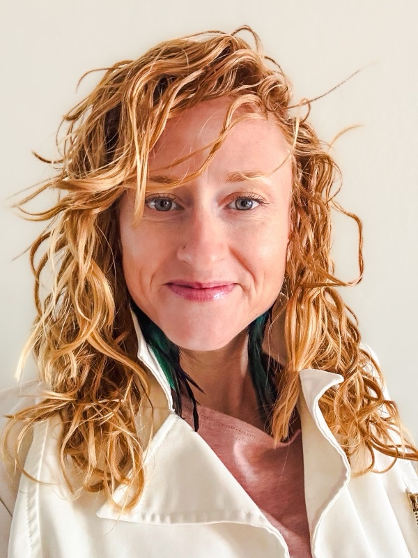

Mesa, Arizona · in person or telehealth
Holistic therapy for women and moms in Mesa, Arizona.
A small, warm practice led by Alicia Wright, LCSW, a therapist and a mom.


Sessions are $85 to $185. We're out-of-network, so we don't bill insurance. You get superbills to send in for possible reimbursement, and HSA and FSA cards work.
One quick question, then you pick a time to talk.
I'm human and I get it. I've walked the journey of healing and transformation. My goal is to see people. The totality of who they are. With compassion and grace, and to help them heal and transform.
AliciaThe work that happens here
- Motherhood, parenting and family life
- Pregnancy, postpartum and new parenthood
- Relationships, marriage and intimacy
- Trauma, and somatic work with the body as well as the mind
- Ketamine-assisted psychotherapy
- Teens and pre-teens
- Life transitions, and the seasons in between
- Holistic work that honors mind, body and spirit
The practice sees individuals, couples, teens and families. This page speaks to women and moms because so many of the people who reach out are.
Who you'll talk to
Alicia Wright
MA, MSW, LCSW · Founder
Alicia works with trauma, couples, parenting, intimacy and the deeper holistic work, including ketamine-assisted psychotherapy. She is also a Kundalini dance teacher and a tantric embodiment facilitator, and she honors the spiritual side of healing as much as the clinical.
Kyla Gordon
MSW candidate · therapist intern, supervised by Alicia
Kyla's focus is perinatal mental health, parenthood, identity through life transitions, and teens. She sees clients at a lower rate, fully supported under Alicia's clinical supervision.
How it works
- Answer one question. It tells us whether Alicia or Kyla is the right first call for you.
- Pick a time. The consultation is a free 30-minute phone call, shown in your own time zone.
- Talk it through. If it feels right, you begin in Mesa or by telehealth anywhere in Arizona. If it doesn't, that's okay too.
Good to know
- What sessions cost
- $85 to $185 a session. Rates follow the therapist's experience and training, with Kyla at the lower end. Ketamine-assisted psychotherapy and coaching are priced separately.
- Insurance
- We're out-of-network. You receive superbills, detailed receipts you can submit to your insurance for possible reimbursement if your plan covers out-of-network care.
- Paying
- Credit, debit, HSA and FSA cards, and Zelle.
- Where
- 2160 E Brown Rd, Suite 3, Mesa, AZ 85213, or telehealth anywhere in Arizona. Therapy is for people located in Arizona.
Or call (480) 771-2181.
What would you like support with?
Pick the closest one. It helps us point you to Alicia or Kyla for your first call.
Your free consultation
The consultation is a phone call, so we need your number. Your confirmation goes to your email.
Pick a time with your therapist.
A free 30-minute call, shown in your own time zone.
Consultations come from a small number of call times each week, so the list is short on purpose. Nothing here is a commitment.
Your details are already with the practice either way.
You're in good hands
We have your details.
The practice has your request. You'll hear from us within one business day.
1. Your grounding guide is on its way to your inbox.
2. Your therapist reaches out within one business day to find a time.
3. You have a free 30-minute consultation, and you decide from there.